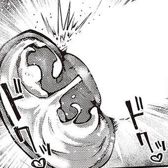

🎀音恋✞Mia🎀（算了变成游戏版）
@HimeMiya_Nekoo
RT @jojoisthirsty: 应该把洗脑变成恋爱日常，并不觉得没有自己的想法有什么不好。明明在以恋爱为借口操控我的大脑，灌输不属于我的性癖，但被哄得太放松，不用自己考虑一切。越无脑听话，生活空间越小，被改造得越多，越沉溺在恋爱的甜蜜里，变成一个完全适应对方需求的泄欲工具…

震撼美味
@jojoisthirsty
应该把洗脑变成恋爱日常，并不觉得没有自己的想法有什么不好。明明在以恋爱为借口操控我的大脑，灌输不属于我的性癖，但被哄得太放松，不用自己考虑一切。越无脑听话，生活空间越小，被改造得越多，越沉溺在恋爱的甜蜜里，变成一个完全适应对方需求的泄欲工具 #男尊女卑 #女德 #PUA #妻奴 #洗脑 #自毁